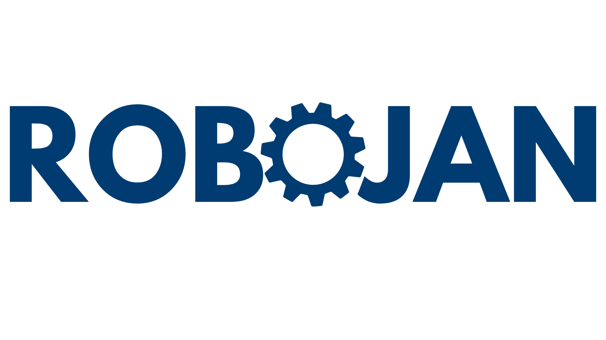

Sailajan Sivalingam
New Graduate
I'm a mechanical engineering graduate with a major in renewable energies. I've done a lot of projects with programming different robots, so I decided I wanted to build upon that programming knowledge using web development!
Enjoy this background of who and what I am!
Featured Projects
View selected projects below. More information can be found at sailajans.myportfolio.com.
Self Balancing Robot
Designed and developed a two wheeled self-balancing robot for hospital use. Used an iterative approach, starting with basic movement and gathering gyroscopic information, then designed a PID controller to allow it to start self balancing.
Aided in the designing the robot, engineering drawings, CAD models, assembly manuals, and demonstrations of the prototype.
Used both DC and BLDC motors, with motor controllers such as the L298N and ODrive for different iterations of the prototype.
Adapted existing solutions on PID controllers to allow our self-balancing to function as intended.
View project / case studySpacestagram
Designed a website from scratch using HTML, CSS, and JavaScript to pull from NASA's API and allow users to like and comment on images from NASA.
Designed custom avatars and backgrounds to allow for personalized profile pictures locally while navigating the site.
View project / case studyAutonomous Robot
Programmed a robot capable of autonomous travel, and obstacle detection/avoidance using a LEGO Mindstorms EV3 kit.
The robot was programmed using C++, and utilized a variety of sensors, including an Ultrasonic sensor, Gyroscopic sensor and Colour sensor to avoid a solid colour barrier and randomly placed objects around the arena.
Aided in other project documentation and report writing, documenting the progress over the course of the semester.
View project / case studyWork Experience
Here are some of my employed activities.
Tesla Advisor
Tesla
November 2022 - Present
Assisted with the day to day tasks of providing Tesla customers with the best experience.
- Communicate with potential and existing customers through calls, emails, and texts, educating them on product offerings.
- Maintain a healthy sales pipeline by collecting customer contact information and scheduling Test Drives using Tesla’s CRM.
- Actively contribute to monthly sales and delivery targets by achieving and exceeding individual Sales and KPI targets.
- Provide a concise and informative product demo to customers about to enter their test drive, explaining most relevant information.
Sales Advisor
Best Buy
October 2018 - September 2020
Assisted with the day to day tasks of providing Best Buy customers with the best experience.
- Provided customers with excellent customer service, developing long term relationships with repeat buyers.
- Provided customers with all the relevant information regarding their product and their purchase entitlements from Best Buy.
- Proactively communicated and collaborated with cross- functional departments regarding logistics, such as low inventory, customer assistance in different departments, loss prevention, and provided assistance in other departments when required.
- Diagnosed and provided support to clients’ technical issues with 95%+ satisfaction rate.
President / Vide President / VP Marketing
Tamil Student Association
September 2017 - September 2020
Provided students of all cultures a taste of Tamil culture.
- Planned, organized, and hosted small to large scale events, from on campus movie nights to events with a budget of $15,000+.
- Communicated with and led a team of 7 executive members, and more than 20 general members.
- Budgeted events and made informed financial decisions for all events using Excel to create thorough budget sheets.
- Designed engaging posters and graphics for physical and social media posts using Adobe Suite and Canva.
Project Manager
Enactus
September 2018 - April 2019
Aimed to reduce the impact Ontario Tech University had on environmental waste by disposing of wax lined cups more effectively.
- Led a project with the goal of reducing the environmental impact our school had by improperly disposing of wax lined cups.
- Communicated with various internal and external stakeholders to gather funding, information, and support.
- Analyzed data of student traffic on campus to plan bin placement accordingly.
- Designed and developed ideas for cup disposal bins to market the experimental recycling program.
Education
Ontario Tech University - Oshawa
Bachelor of Engineering, 2022
Completed my B.Eng in mechanical engineering, while also making my way up to president in a student club, managed a project in an entrepreneurial club, and working part time at Best Buy..